Some of the best afternoons with your child start with nothing more than a stack of paper and a little imagination. These easy paper crafts for kids use basic supplies you probably already have at home, and every single one of them is designed to feel fun rather than stressful. Whether you have 15 minutes or a whole rainy afternoon, there is something on this list your child will love making with you. 🎨
From simple folds to cheerful cut-and-glue creations, easy paper crafts for kids are one of the best ways to spark creativity without any prep pressure. Scroll through, pick one that catches your eye, and dive in together.
What You'll Need
Most of these projects use the same handful of supplies, so one trip to your craft drawer covers you for the whole list.
- Crayola Construction Paper, assorted colors in a bulk pack for plenty of variety.
- Fiskars Training Scissors for Kids, with a spring-action lever that makes cutting easy for small hands.
- Elmer's Disappearing Purple Glue Sticks, washable and easy to see where you have applied them.
- Crayola Broad Line Washable Markers, perfect for decorating finished crafts with bold, bright color.
- Self-Adhesive Googly Eyes, a fun detail that brings puppets, animals, and bookmarks to life.
- Tape or a stapler, for projects that need a little extra hold.
- String or ribbon, for hanging mobiles and decorations.
20 Easy Paper Craft Ideas for Kids
1. Paper Bag Puppet
A simple paper bag, a few markers, and some paper scraps are all it takes to create a whole cast of characters. Let your child design any creature they can imagine, from silly monsters to friendly farm animals. These paper bag puppets last well beyond the crafting session and make the perfect props for a spontaneous puppet show.
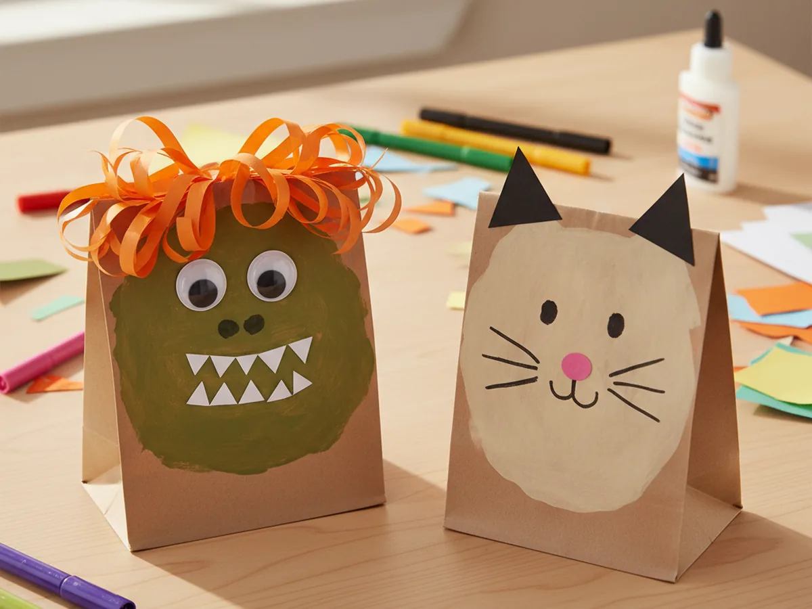
2. Paper Chain Garland
Cut strips of colorful construction paper, loop each one into a ring, and glue the ends together to build a cheerful chain. The back-and-forth rhythm of looping strips is wonderfully calming for young children, and the result looks beautiful draped across a shelf or hung along a wall. Even two-year-olds can help with the looping once you have the strips ready.
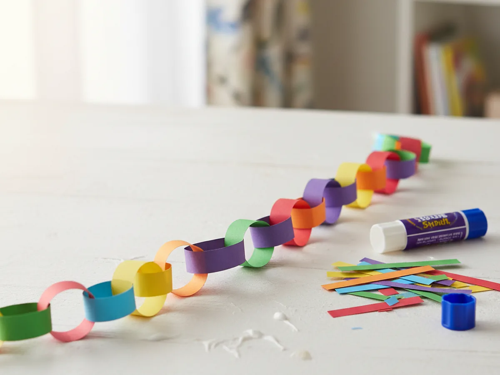
3. Origami Paper Boat
A single sheet of paper and a few simple folds is all it takes to make a classic boat that actually floats. This is one of those easy paper crafts for kids that never gets old. Once your child learns the fold sequence, they will want to make an entire fleet in every color they can find.
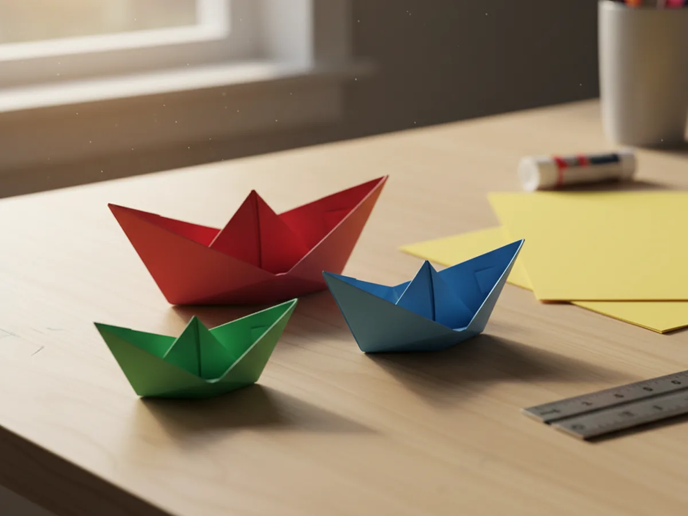
4. Paper Sunflower
Cut a large brown or dark yellow circle for the center and glue bright yellow petal shapes all around the edge. Add a green strip stem and a couple of leaf shapes at the sides. These cheerful paper sunflowers look stunning displayed on a window, pinned to a bulletin board, or gathered into a paper bouquet for someone special.
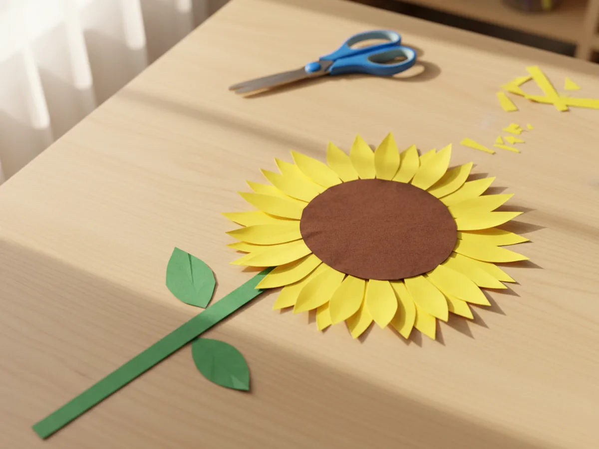
5. Paper Crown
Fold a long strip of construction paper, cut triangular points along the top edge, and tape or staple the ends together to fit your child's head. Let them decorate with stickers, marker drawings, and colorful gem stickers before crowning themselves the official ruler of craft time. Older kids can add extra details like a foil band or jewel cutouts for a more elaborate look.
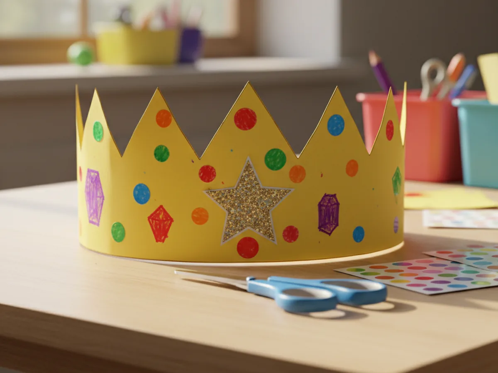
6. Paper Pinwheel
Cut a square of paper, make diagonal cuts from each corner toward the center, and fold every other point into the middle. A brad fastener holds everything together and lets the pinwheel spin freely on a pencil. Kids love running outside with their finished pinwheel to feel it twirl in the breeze.
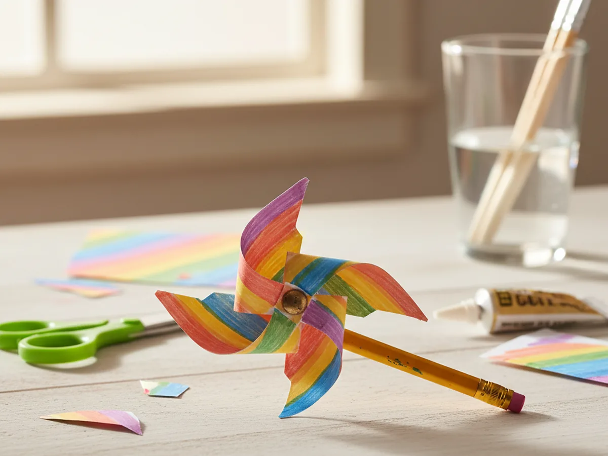
7. Paper Jellyfish
Cut a large semicircle from blue or purple paper for the jellyfish body and attach long crepe paper or tissue paper strips along the flat bottom edge for tentacles. Add googly eyes near the top and hang from a string. These paper jellyfish make adorable hanging decorations and always get a big reaction from kids.
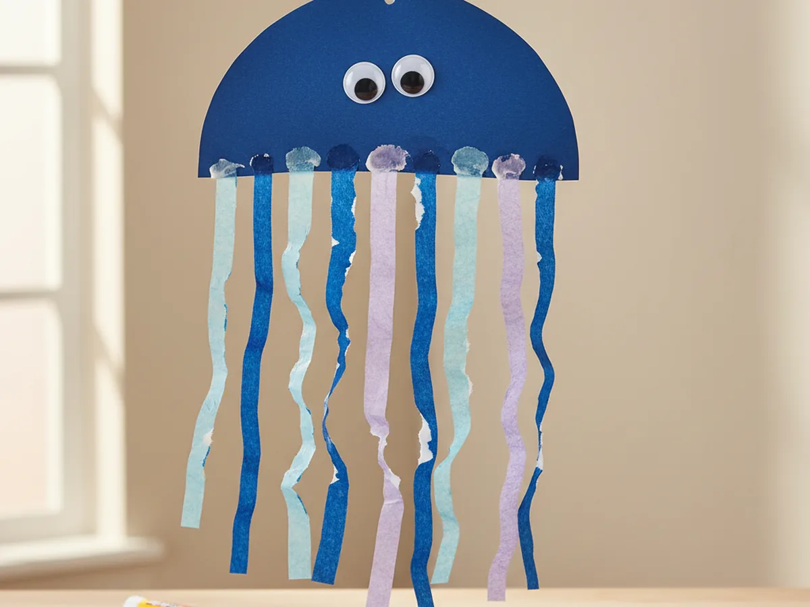
8. Paper Monster Bookmark
Fold a square of paper into a triangle pocket, then decorate it with googly eyes, paper fangs, and tiny paper horns cut from a contrasting color. The finished monster fits right over the corner of a page and grips it like little claws. These bookmarks make reading feel like an adventure and are a huge hit with kids ages 4 and up.
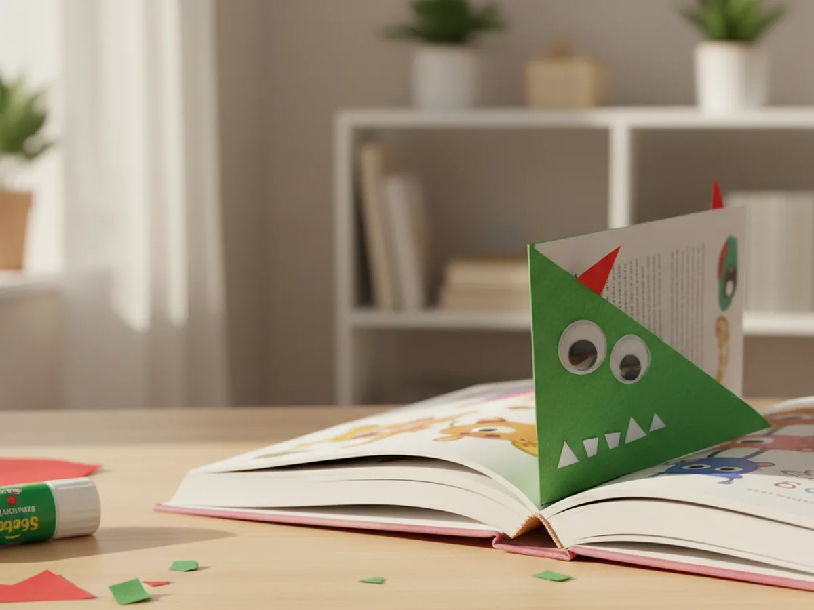
9. Paper Accordion Fan
Fold a rectangular sheet back and forth in equal sections like an accordion, then pinch one end and fan it open into a beautiful spread. Secure the pinched end with tape or a rubber band. For an extra-pretty result, let your child decorate the paper with stripes or dots before folding so the pattern appears in the finished fan.
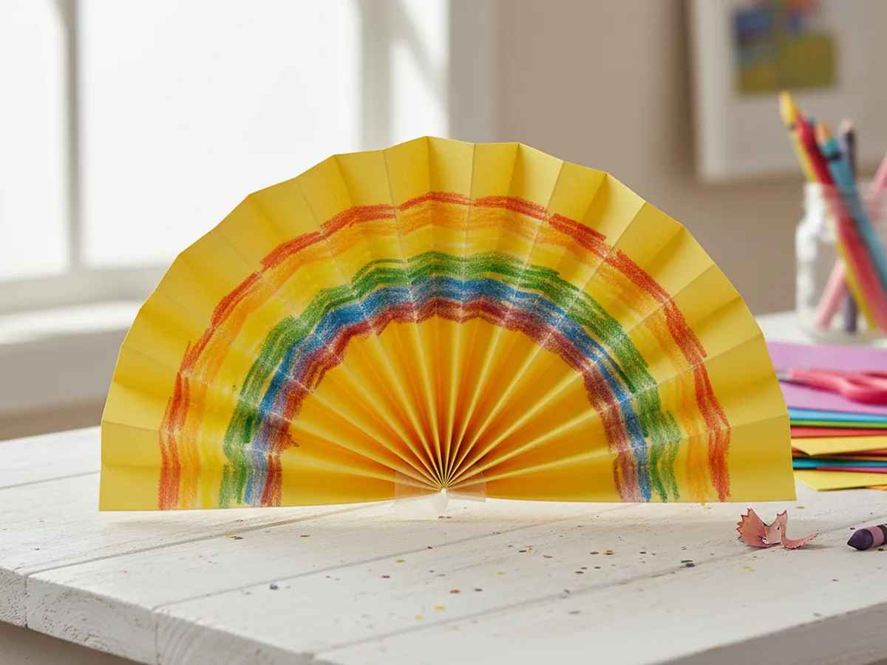
10. Paper Spiral Snake
Draw a large spiral on a round piece of paper, cut along the line from the outside edge toward the center, and decorate it with scales, stripes, or dots. Add a googly eye at the head end and a small red paper tongue. When you hold the head up, the body hangs down and sways just like a real snake. 🐍
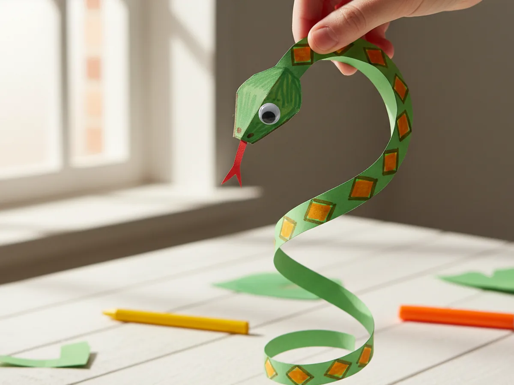
11. Paper Bird
Fold a square of paper in half diagonally, bring one corner up slightly to suggest a beak and a tail, and secure with a small piece of tape. Add a little round sticker or drawn eye on each side. Kids love making whole flocks of paper birds in different colors and hanging them from a stick to create a cheerful hanging mobile.
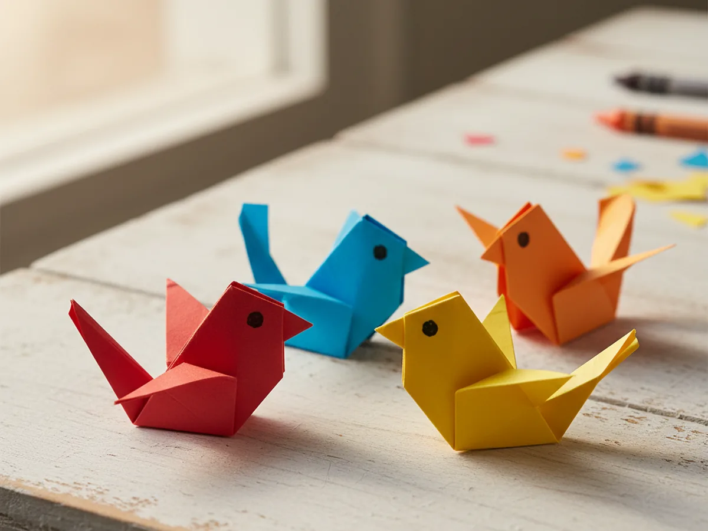
12. Paper Rocket
Roll a rectangle of construction paper into a tube, tape the seam, then form a cone from a cut circle for the nose. Cut fin shapes from another sheet and tape them evenly around the base of the tube. Decorate with crayon flames, stars, and mission patches for a rocket that looks ready for launch right from the living room.
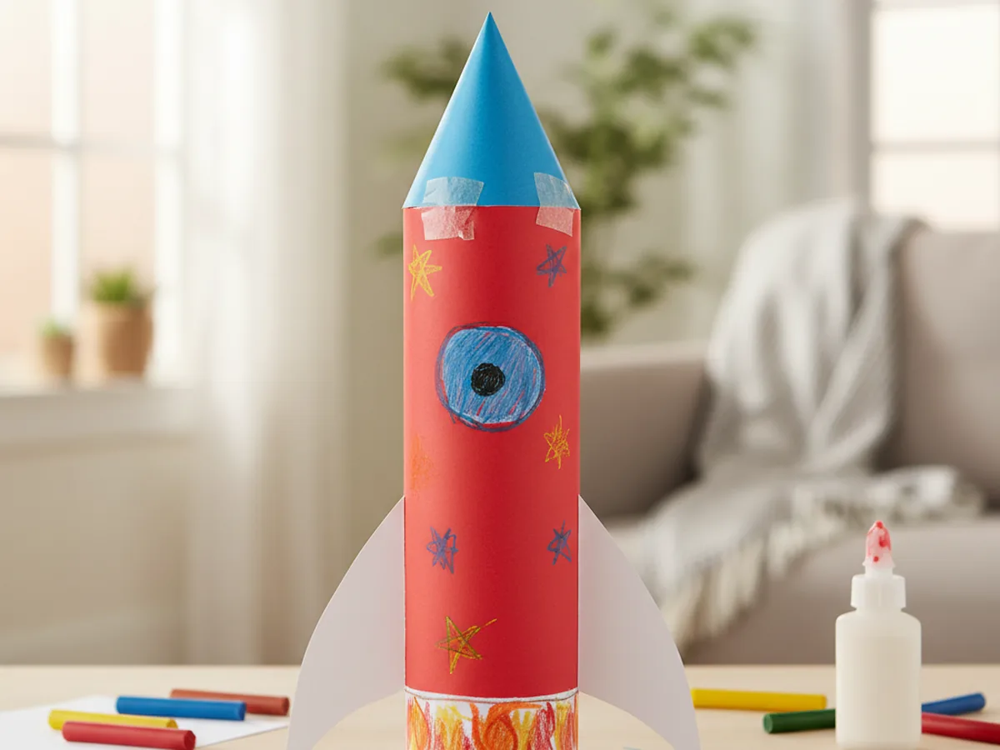
13. Paper Woven Heart
Fold two sheets of different-colored paper in half, cut the same heart shape from each, then weave the strips of one through the other to create a beautiful interlocked design. This classic craft takes a little patience but produces a result that looks truly impressive. It is one of those easy paper crafts for kids that makes a wonderful handmade gift or Valentine's card.
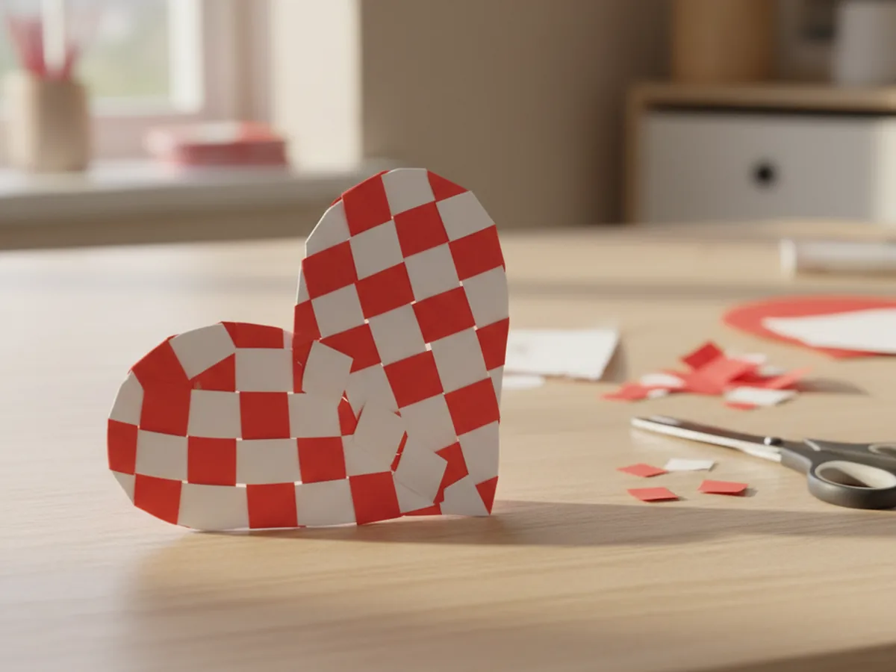
14. Paper Caterpillar
Cut circles in alternating colors and glue them in a long row to form a wiggly body. Add googly eyes at one end, a cheerful smile drawn with marker, and two curled antenna strips made from thin paper coiled around a pencil. These paper caterpillars look adorable lined up along a windowsill and are simple enough for toddlers to help with.
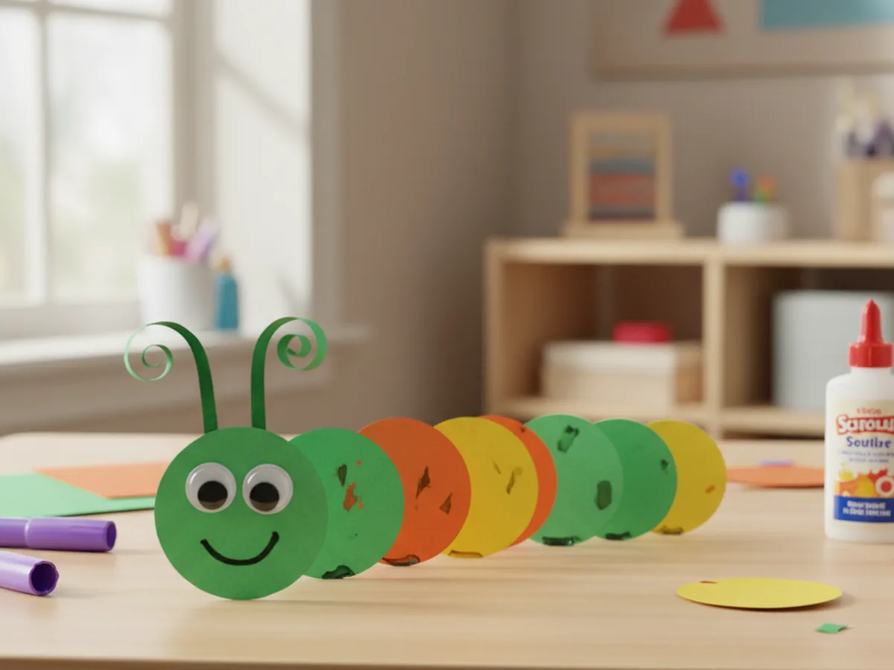
15. Paper Kite
Cut a diamond shape from sturdy paper, score the edges slightly for a gentle fold, and attach a long ribbon tail to the bottom point. Decorate the surface with bold stripes, stars, or swirls using markers. Punch a small hole at the top and tie a long piece of string for a room decoration that feels full of outdoor adventure.
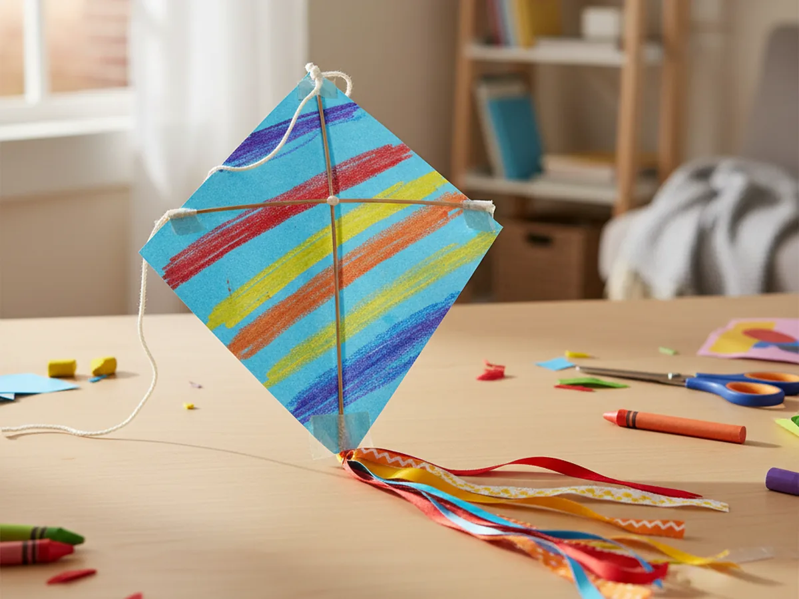
16. Paper Elephant
Cut a large oval body, four rectangle legs, two big rounded ear shapes, and a long curved trunk from grey or blue paper. Assemble and glue them together, then add a small white tusk and a black marker eye. Your child will feel genuinely proud of their finished paper elephant, and it looks so sweet displayed on a shelf or bedroom door.
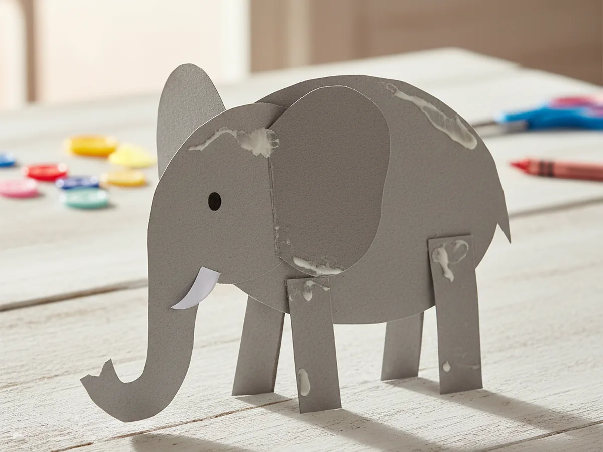
17. Paper Fortune Teller
Fold a square sheet in half, then in half again, and fold each corner to the center point. Flip it over and fold the corners to the center again. Fold in half to reveal the four flap pockets, and pop them open to finish. Write numbers, colors, and fun fortunes inside the flaps. Kids everywhere call these cootie catchers, and they love making a batch to trade with friends.
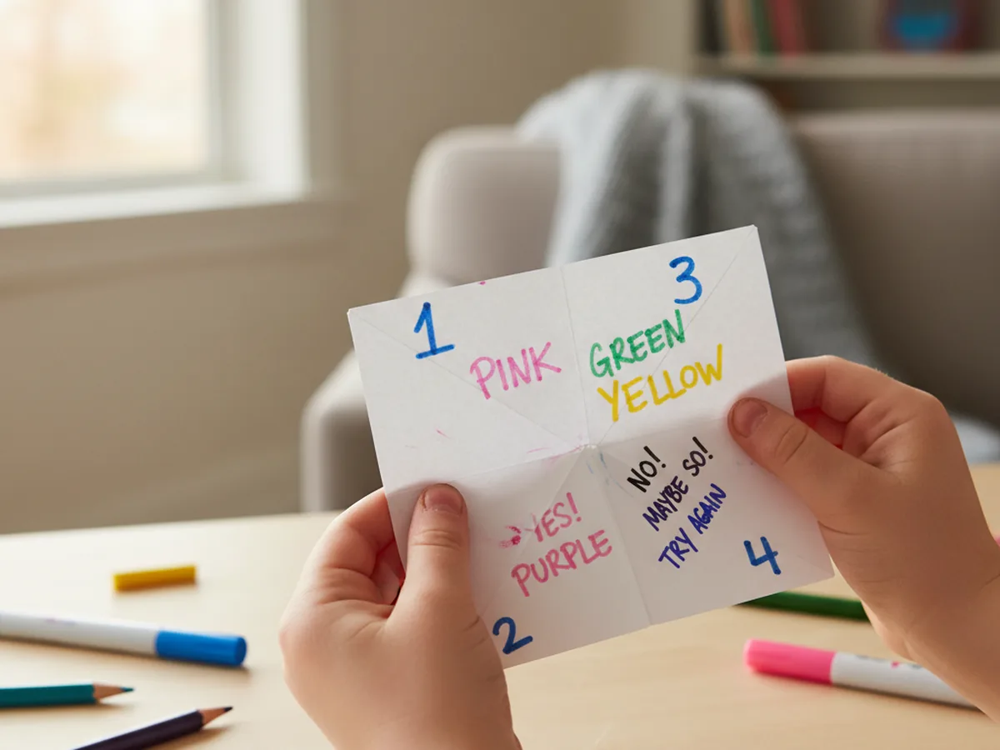
18. Paper Butterfly Mobile
Cut butterfly shapes in different sizes from bright sheets of paper, then pinch each one gently along the center to give the wings a three-dimensional lift. Tie each butterfly to a different length of string and hang them all from a wooden dowel or a wire hanger. The finished mobile dances beautifully in any breeze near a window.
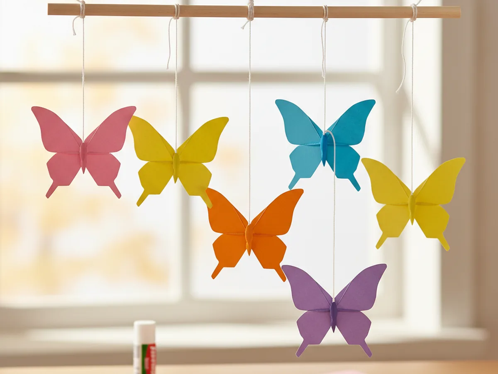
19. Paper Pencil Holder
Wrap a colorful sheet of construction paper around an empty jar or cardboard tube, secure it with tape or glue, and let your child go wild decorating the outside with markers, cut paper shapes, and sticker dots. The finished pencil holder is a personalized organizer any kid will feel proud to keep on their desk or bedside table. It also makes a sweet homemade gift.
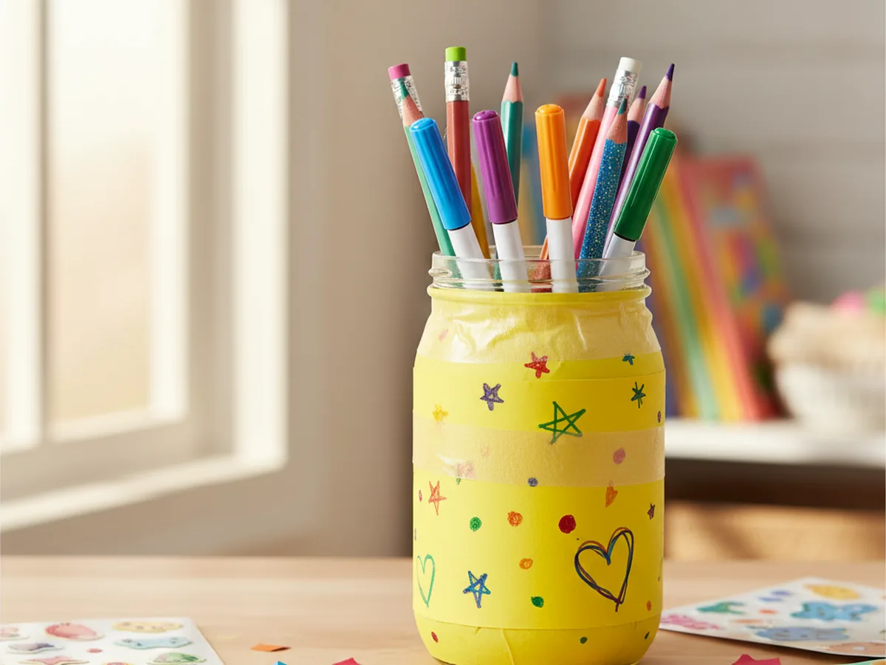
20. Paper Pop-Up Card
Fold a piece of card stock in half, cut two small parallel slits in the center fold, then push the cut strip forward so it pops up when the card opens. Glue a small paper shape onto the popped tab, such as a flower, heart, or birthday cake. Watching the surprise reveal is genuinely magical for young children, and the card becomes a keepsake they want to open again and again.
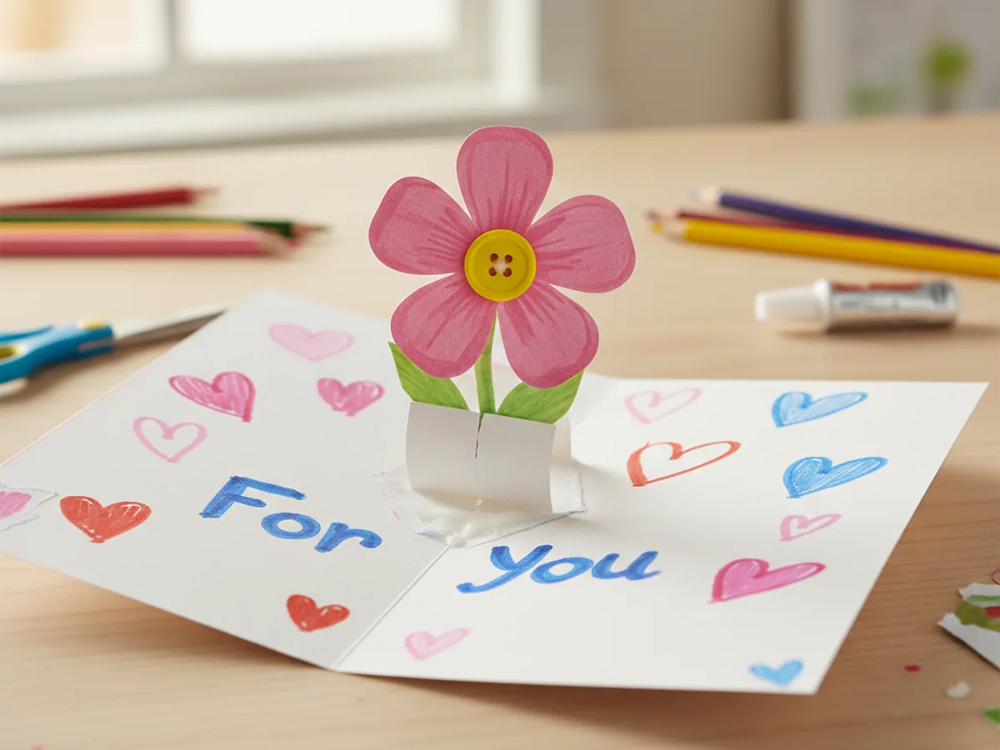
Final Thoughts
The sweetest part of any craft afternoon is not the finished project. It is the time you spend making it together. These easy paper crafts for kids are designed to keep the focus on fun and connection rather than perfection. Pick one idea that excites your child today, gather your supplies, and see what you create together. You might be surprised how much they ask to do it again. 🌟
Every single one of these easy paper crafts for kids can be done with a simple stack of paper and a glue stick, so there is truly nothing stopping you from starting right now.
More Crafts You'll Love
If you enjoyed this list, here are two more paper craft collections worth exploring with your little ones.
Happy crafting, and enjoy every colorful, creative minute of it. ✂️